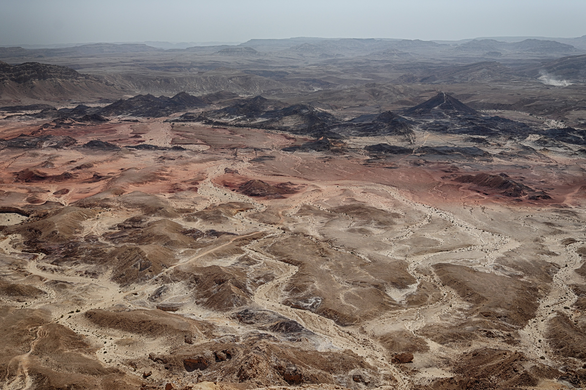
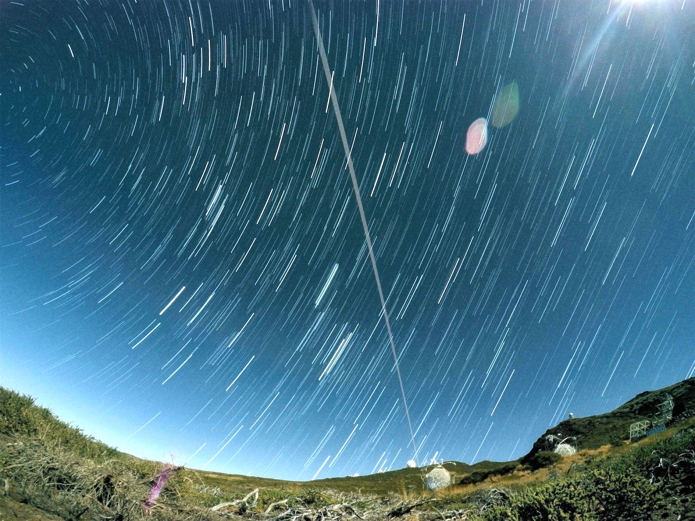
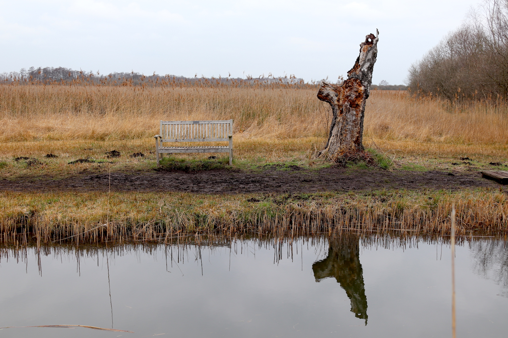
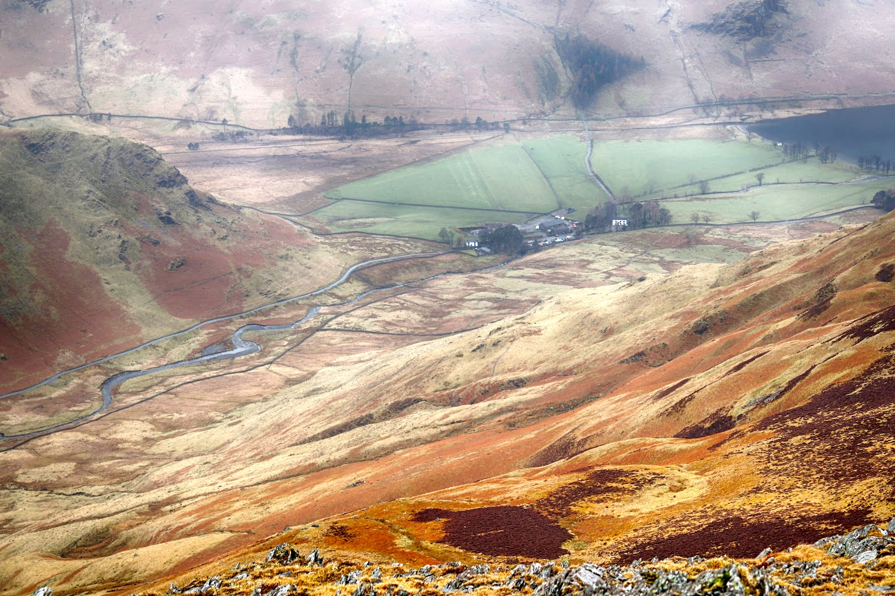
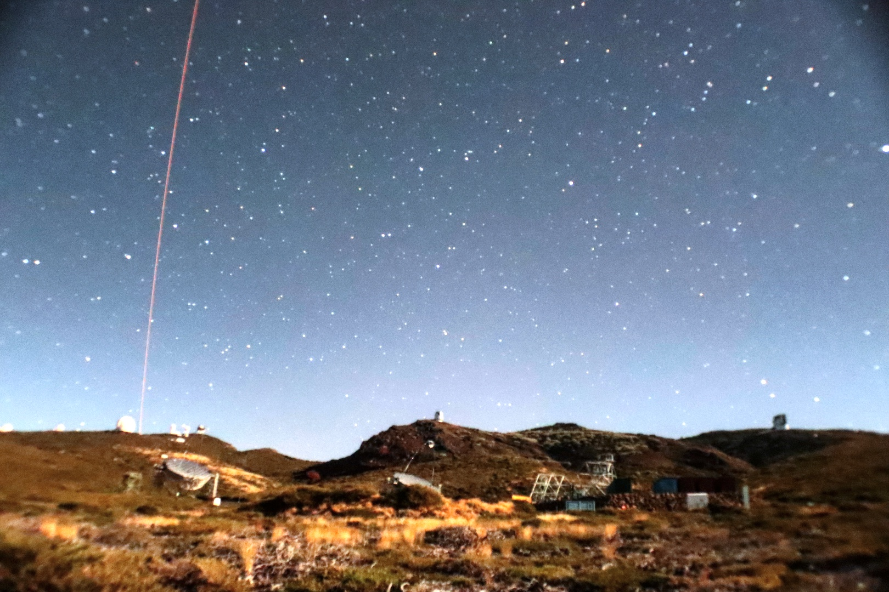
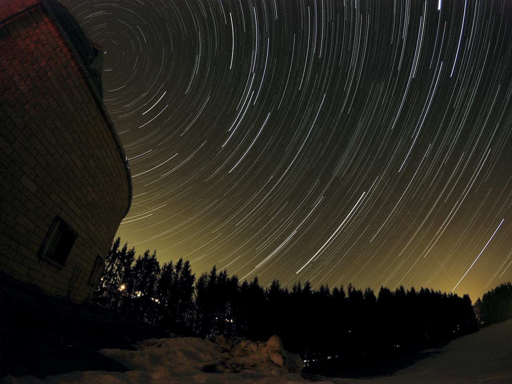

- 
- 
- 
- 
-

-

- 
-

- 
I am a PhD graduate from the Institude for Astronomy of the University of Edinburgh. I worked on the topic of White Dwarf Luminosity Functions with the Pan-STARRS 3-pi Survey. A fast learner and self-taught programmer proficient in paralleling computing with Python using mpi4py. Excellent design and visualisation skills - strongly believe quality visualisation is the means to effective communication. Experienced tutor in Mathematics and Physical Sciences at University Level. Qualified A-Level examiner.
I was previously working as a Scientific Software Developer at the Astrophysics Research Institute at the Liverpool John Moores University. During my spare time, I carried out independent research in the topic of White Dwarfs in the solar neighbourhood using Pan-STARRS, Gaia, LT etc.
I am currently a postdoctoral research fellow at the Tel Aviv University working with Iair Arcavi on the development of an iraf-free spectral data reduction software, ASPIRED; and with Dan Maoz on Delay Time Distribution of supernovae. My own research topic covers Astronomical Software Development, Astronomical Techniques, White Dwarfs, Blue Large Amplitude Pulsators.
PhD in Astrophysics • 2012 - 2016
White Dwarf Luminosity Functions from the Pan-STARRS1 3pi Survey
The maximum volume density estimator is generalised over a photometric and proper motion limited sample tested on a Monte-Carlo simulated WD catalogue. The method is applied to the Pan-STARRS 3pi Steradian Survey to construct white dwarf luminosity functions of the solar neighbourhood. Interstellar reddening correction with a three-dimensional dust map and detailed treatment of the varying survey depth as a function of positions are considered for the first time.
MSci in Natural Sciences (Astrophysics) MA (cantab)• 2008 - 2012
An Infrared Hunt for the Nearest and Coolest Stars
Combining the near-infrared (NIR) data from VISTA and mid-infrared (MIR) from WISE stored in a PostgreSQL database to search for the nearest and coolest objects that were not identied due to their extreme faintness in the optical.
Postdoctoral Researcher • 2020 - Present
Currently working on the following projects:
(1) ASPIRED - an iraf-free spectral data reduction toolkit written in Python
(2) RASCAL - an automated wavelength calibration software
(3) WDPhotTools - a toolkit to fit white dwarf photometry and generate luminosity functions
(4) SpectResC - a simple spectral resampling tool written in Python with C-extension, based on the original work SpectRes
(5) SpectroscopicStandards - a web viewer of a collection of spectroscopic standards
(6) Disentangling_Shift_And_Add - a spectral distentangling software adapted from Tomer Shenar's development
(7) autopsf - a tool to compute an empirical PSF, heavily dependent on photutils and psfr
(8) Deriving star formation histories from White Dwarf Luminosity Functions
(9) Identify and understand the nature of Blue Large Amplitude Pulsators
(10) Reconstructing Delayed Time Distribution of supernovae from legacy data
Scientific Software Developer • 2017 - 2020
Projects:
(1) developed a Telescope Control System in collaboration with the National Astronomical Research Institute of Thailand (NARIT).
(2) designed and prototyped a data pipeline for the Astroecology group at the ARI.
(3) developed a web-based astronomical image manipulation tool with the National Schools' Observatory.
(4) containerised the Liverpool Telescope data reduction pipeline with Docker.
(5) Data Flow and Archiving for Robotic Operations Present and Future.
Examiner • 2017 - Present
Assist Principal Examiner in marking A-Level Mathematics scripts and to provide feedback with a written report. Prior to the marking, the standardisation process has to be completed as specified.
(1) 9709/62 Mathematics Probability & Statistics 62 (GCE AS & A Level 2017) - Marked 742 scripts online in 3 weeks and provided feedback to the Principal Examiner.
Teaching Assistant • 2012 - 2017
Main responsibilities are to lead tutorial classes for groups of students to discuss key points from lectures through the use of practical equipment, experiments and exercises. During practical exercises, provide sufficient assistance and guidance when required, and be aware of any Health and Safety issue. In sessions with small groups, it is necessary to monitor student progress and to provide feedback to them either immediately or through feedback provided on marking of assignments.
(1) Observational Astronomy (3rd year course 2013-2017)
(2) Dynamics and Vector Calculus (2nd year course 2012-2013, 2016-2017)
(3) Mathematics for Physics (2nd year course 2016-2017)
(4) Linear Algebra and Several Variable Calculus (2nd year course 2012-2014, 2016-2017)
(5) Senior Honours Group Project (4th year course 2013-2016)
(6) Introductory Astrophysics (1st/2nd year course 2013-2014)
(7) Physics 1B: The Stu
of the Universe (1st year course 2012-2013)
(8) Astronomy 1S: Stellar and Planetary Science (1st/2nd year course 2012-2013)
Lam, M C; Smith, R J; Arcavi, I; Steele, I A; Veitch-Michaelis, J; Wyrzykowski, L
McWhirter, P R; Lam, M C; Steele, I A
Lam, M C; Hambly, N C; Lodieu, N; Blouin, S; Harvey, E J; Smith, R J; Galvez-Ortiz, M C; Zhang, Z H
Lam, M C; Hambly, N C; Rowell, N; Chambers, K C; Goldman, B; Hodapp, K W; Kaiser, N; Kudritzki, R-P; Magnier, E A; Tonry, J L; Wainscoat, R J; Waters, C
School of Physics and Astronomy
Tel Aviv University
Tel Aviv
Israel 69978
lam[at]mail.tau.ac.il